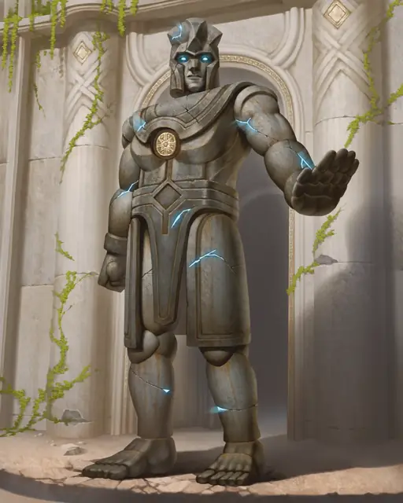

Каменный голем
Stone Golem
Большой Конструкт, без мировоззрения

Класс Защиты 18 Инициатива +3 (13)
Хиты 220 (21к10 + 105)
Скорость 30 футов
| мод | спас | ||
|---|---|---|---|
| СИЛ | 22 | +6 | +6 |
| ЛОВ | 9 | −1 | −1 |
| ТЕЛ | 20 | +5 | +5 |
| мод | спас | ||
|---|---|---|---|
| ИНТ | 3 | −4 | −4 |
| МДР | 11 | +0 | +0 |
| ХАР | 1 | −5 | −5 |
Иммунитеты Психический, Яд; Испуганный, Истощение, Окаменевший, Отравленный, Очарованный, Парализованный
Чувства Тёмное зрение 120 футов, пассивное Восприятие 10
Языки знает Общий плюс два других языка, но не говорит
Опасность 10 (5 900 опыта; БВ +4)
Особенности
Неизменяемая форма. Голем не может перевоплощаться и быть перевоплощён.
Сопротивление магии. Голем совершает с Преимуществом спасброски от заклинаний и прочих магических эффектов.
Действия
Мультиатака. Голем совершает две атаки Крушащим ударом или Силовым снарядом в любой комбинации.
Крушащий удар. Бросок рукопашной атаки: +10, досягаемость 5 фт. Попадание: 15 (2к8 + 6) Дробящего урона плюс 9 (2к8) Силового урона.
Силовой снаряд. Бросок дальнобойной атаки: +9, дистанция 120 фт. Попадание: 22 (4к10) Силового урона.
Бонусные действия
Замедление (Перезарядка 5–6). Голем сотворяет заклинание Замедление, не нуждаясь в компонентах (заклинательная характеристика — Телосложения, Сл спасброска заклинаний 17).
Бонус мастерства +4
Среда обитания Любая
Сокровища Отсутствуют
Каменный голем
Хранитель всего легендарного и священного
Каменные големы могут принимать различные формы: от выветрившихся изваяний божеств до реалистичных скульптур героев, а также любых других образов, которые придумают их создатели. Неважно из какого камня они сделаны и как выглядят — укреплённые магией големы могут выполнять приказы своих творцов на протяжении столетий.
Как правило, каменных големов создают для защиты особо важных для общества мест, таких как памятник важному событию, могила лидера или религиозное святилище. Совершите бросок по таблице «Приказ каменного голема» для вдохновения или выберите сами команду, которой следует каменный голем.
Приказ каменного голема
| 1к6 | Выполняя приказ, каменный голем будет… |
| 1 | Пропускать только тех, кто одет в ритуальные одежды. |
| 2 | Сотворять заклинание Замедление и помогать задерживать любого, дотронувшегося до ценной городской реликвии. |
| 3 | Разрушать плотину или мост по приказу того, кто владеет медальоном правителя. |
| 4 | Повиноваться тому, кто вставит в его грудь потерянный герб, а затем выключится на год. |
| 5 | Открывать тайный проход для тех, кто произнесёт последние слова лидера. |
| 6 | Присматривать и сражаться с чудовищами, убившими героя, по образу которого он создан. |